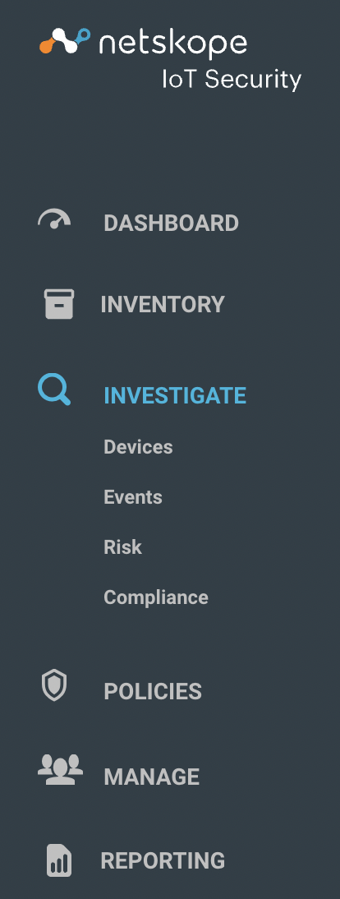
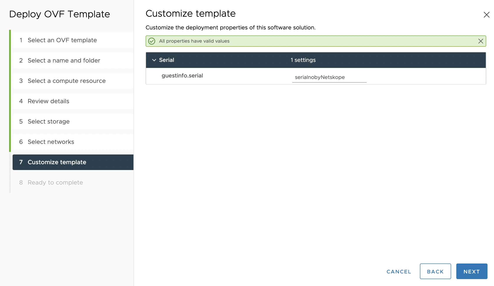

New Features And Enhancements - January
Here is the list of new features and enhancements.
Streamlined Navigation Hierarchy
With the latest update, you can see an improved Netskope IoT Security UI for better user interaction and accessibility, with the following major UI improvements:
Executive, Security and IT Dashboards are now tabs.
Inventory menu in the left navigation provides access to the device inventory and details.
The investigate menu describes devices, events, risk, and compliance in the submenus.
Policies menu shows a list of policies, create and modify polices, and blocked devices sub menus.
Manage menu provides the integration and third party configuration features.
Reporting menu lists the reports and saved searches.
|  |
Zero Touch Provisioning
The latest feature streamlines provisioning of Netskope IoT tenant without the need for any manual steps. You need to provide the serial number while configuring the virtual machine and the process configures the appliance automatically. Once the Netskope IoT Security machine is up and running, you can directly login to the user interface to check your appliance and devices.
|  |
Tags and Groups are now Improved
With this update, you get an enhanced version of tags and groups. You can do operations like:
Dedicated and streamlined workflows for managing tags and their lifecycles.
Third party tag integrations.
On-prem Rapid7 Integration
With this enhancement, Netskope IoT Security integrates on premises Rapid7 and the APIs pull the reports automatically. Previously, you had to send the reports manually to analyse the potential threats. The new version pulls the latest generated vulnerability report and pushes this data to the Netskope IoT Security cloud.
ManageEngine Integration
With this enhancement, Netskope IoT Security integrates on premises ManageEngine asset management system. It pulls the data through APIs and pushes this data to the Netskope IoT Security cloud.
Additional Remediation Actions Using Meraki Endpoints
With the latest update, you can now segment and display captive portal in addition to blocking in environments with Meraki.
Aruba WLC Integration
With the latest release, Netskope IoT Security integrates on premises Aruba WLC asset management system using command-line interface.
Sites and Regions Management
With the latest release, you can manage your sites and regions under the Manage > Sites and Regions > Site Management section. By default, Netskope IoT Security provides a HQ region and Default site. You can create your own sites and regions using the user interface.